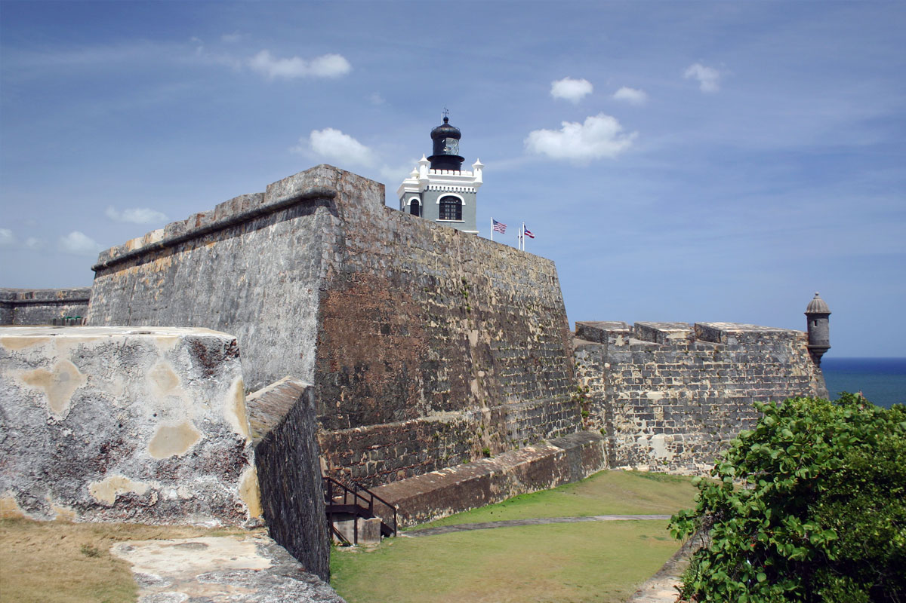
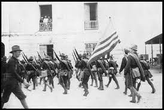

Puerto Rico's History
Puerto Rico was first inhabited by the Taínos which was a group of indigenous people who lived on the island for hundreds of years. They travelled from South America to the island before any foreign power was able to take control of the island. The island was ruled by Agüeybaná and her descendants, they named the island Borikén or Borinquen a name that is still used to call the island by locals. The Tainos lived on the island for many years in harmony for many years until the Spanish colonized Puerto Rico in 1493.
Spanish Occupation
Columbus arrived to the island in 1493 while on his second voyage to the “New World.” The Spanish originally named the island San Juan Bautista after the Jewish prophet, the name was later changed to Puerto Rico or “Rich Port” as there was many gold deposits found around the island. Given the vast resources that the island offered it became one of the Spanish’s strongest outpost as it was strategically positioned in the Caribbean and offered the largest bay to anchor their ships. The Spanish built the two of the largest forts in the Caribbean which were called El Morro and el Castillo San Cristobal (San Cristobal Castle) these forts withstood dozens of attacks and are still standing to this day in mint condition. To the right is an image of El Castillo San Felipe.
Becoming a United States Territory
After the culmination of the Spanish-American war in 1898 Puerto Rico became a US territory as a part of the Treaty of Paris. This brought many changes to the island, it let the island into a phase of modernization, the currency changed, and the US government structure was implemented in the island. During the first decades of US rule all inhabitants of the island were granted US citizenship and given a chance at an education through the establishment of public education. A current issue is on the island is the island status if the citizens want to stay as a territory or become a separate country or join the United States as the 51st state. To the left is an image of American troops marching down a street in Puerto Rico.